NAS快速搭建个人网盘
第五课链接：基于ECS和NAS搭建个人网盘
1. 创建资源
进入场景体验后，点击 免费开通 ECS实验资源，获取2小时ECS和相关云服务。
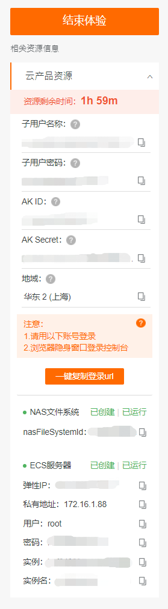
可以看到用户名和弹性IP。
2. 连接ECS服务器
在本地电脑终端中连接SSH，用户名应为root，并输入密码。
ssh <用户名>@<弹性IP> |
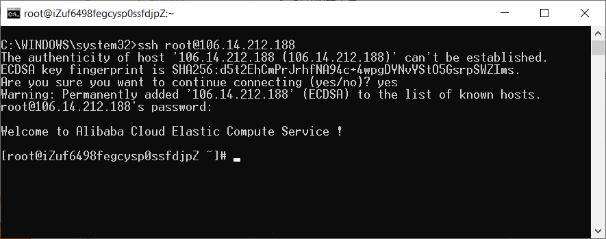
3. 安装OwnCloud
OwnCloud是一款开源的云存储软件，基于PHP的自建网盘。基本上是私人使用，没有用户注册功能，但是有用户添加功能，可以无限制地添加用户，并且支持多平台。
添加一个新的软件源
rpm --import https://download.owncloud.org/download/repositories/10.0/CentOS_7/repodata/repomd.xml.key |
安装OwnCloud-files
yum install owncloud-files |
检查安装是否成功
ll /var/www/html |
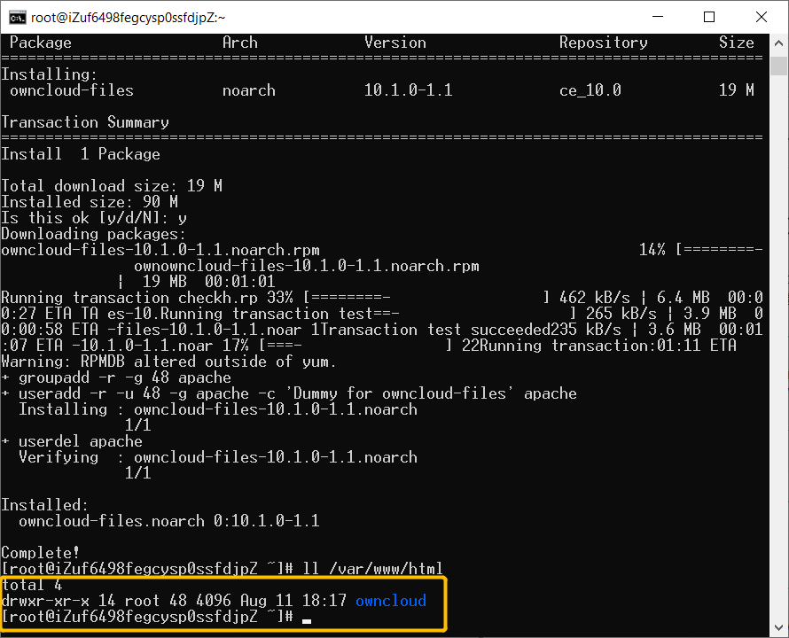
4. 安装Apache服务
安装Apache
yum install httpd –y |
启动Apache服务
systemctl start httpd.service |
浏览器打开弹性IP，可以看到测试网页表示安装成功。
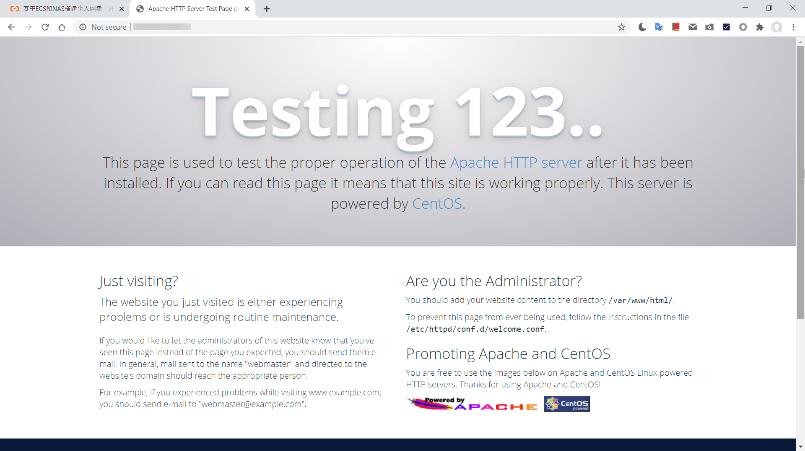
打开Apache配置文件
vim /etc/httpd/conf/httpd.conf |
按i进入编辑模式, <Directory/>代码块后添加OwnCloud配置
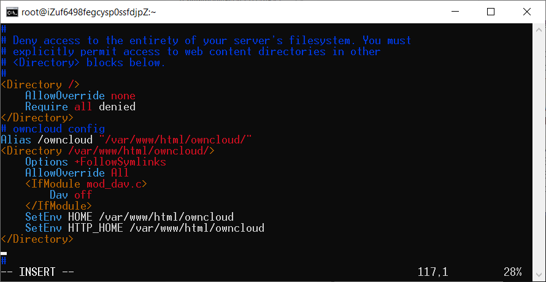
# owncloud config |
按Esc退出编辑模式，:wq保存并退出vim。
5. 安装并配置PHP
手动更新rpm源
rpm -Uvh https://dl.fedoraproject.org/pub/epel/epel-release-latest-7.noarch.rpm |
安装PHP 7.2版本
yum -y install php72w |
检查PHP是否安装成功
php -v |
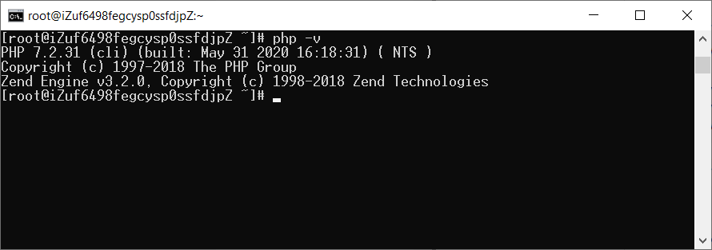
将PHP配置到Apache中，先查看php.ini所在位置
find / -name php.ini |
用vi打开httpd.conf
vi /etc/httpd/conf/httpd.conf |
在文件最后添加/etc/php.ini为PHP初始化执行路径
PHPIniDir /etc/php.ini |
保存并退出，重启Apache服务
systemctl restart httpd.service |
6. 配置OwnCloud
在浏览器输入<弹性IP>/owncloud，即可创建管理员账号的登录名密码，完成设置OwnCloud。
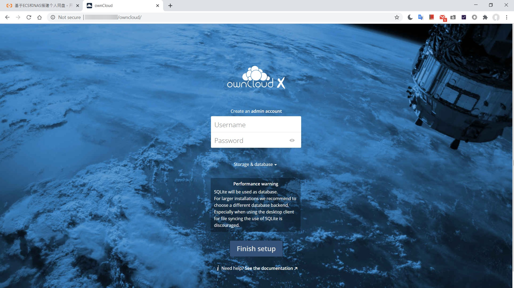
7. 挂载NAS服务
文件存储 Network Attached Storage (NAS) 提供了简单的可扩展文件存储以供与 ECS 配合使用，多个ECS实例可以同时访问 NAS 文件系统，并且存储容量会随着添加和删除文件而自动弹性增长和收缩，为在多个实例或服务器上运行的工作负载和应用程序提供通用数据源。
新建一个浏览器无痕模式窗口，访问https://signin.aliyun.com/login.htm（可通过体验页 一键复制登录url 按钮获得）。
输入体验ECS的子用户名称和密码登录，在阿里云控制台打开文件存储NAS控制面板
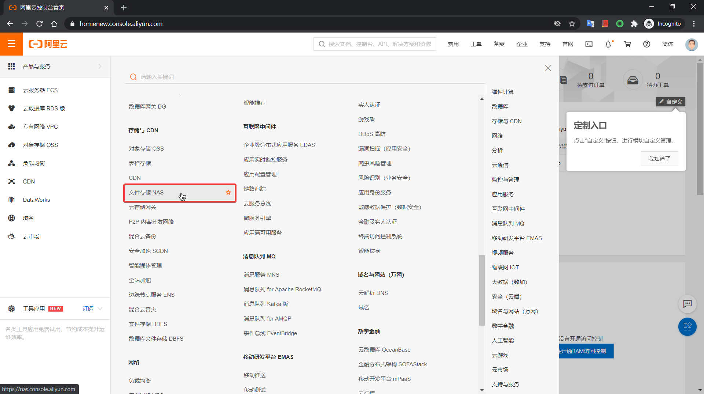
进入文件系统列表，在左上角切换到NAS体验实例所在地区，点击打开实例
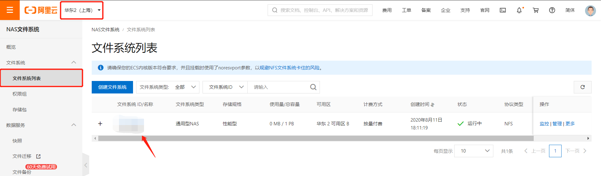
打开 挂载使用 > 添加挂载点 > 专有网络
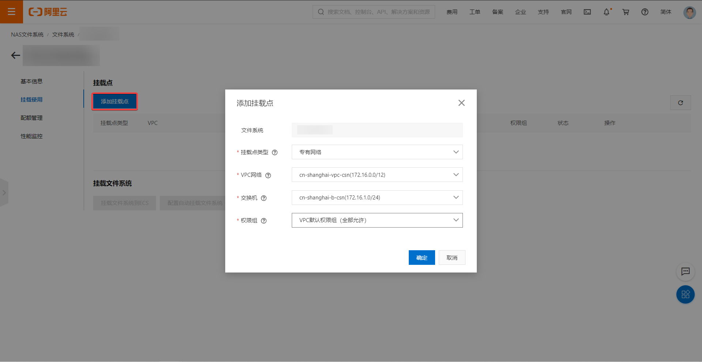
在终端中安装NFS客户端
yum install nfs-utils -y |
回到控制台，点击 挂载文件系统到ECS
复制挂载命令
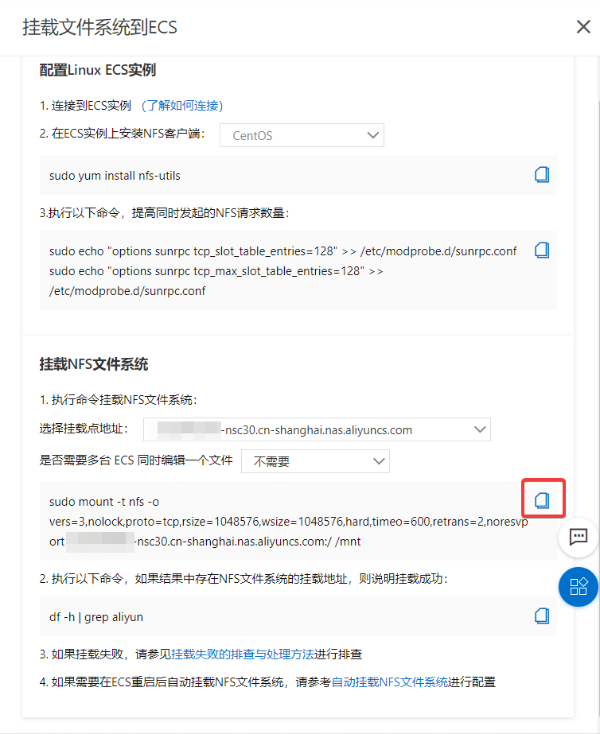
把最后的/mnt替换为/var/www/html/owncloud/data/<OwnCloud登录名>后，在终端执行（样式如下）
sudo mount -t nfs -o vers=3,nolock,proto=tcp,rsize=1048576,wsize=1048576,hard,timeo=600,retrans=2,noresvport [NAS实例ID].cn-shanghai.nas.aliyuncs.com:/ /var/www/html/owncloud/data/<OwnCloud登录名> |
查看是否安装成功
df -h | grep aliyun |
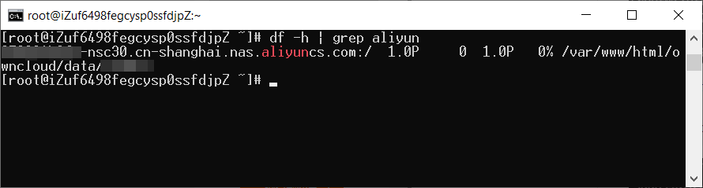
exit命令可退出终端的SSH连接。
在浏览器中登录OwnCloud即可使用个人网盘。默认目录和文件不可读写，需要在网盘中新建目录上传。
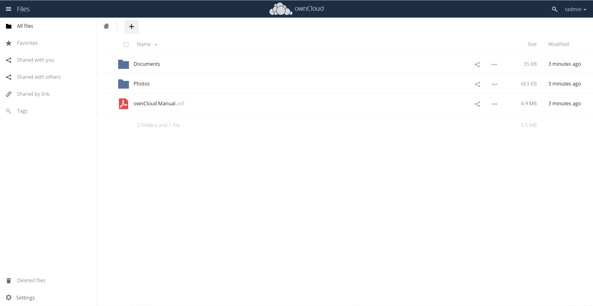